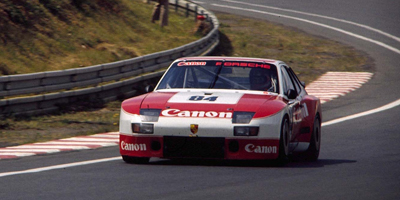
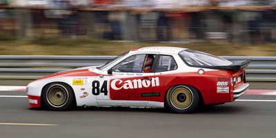

I am very keen to use more pictures on this website. If you have any pictures of the 924 GT, GTS, GTR and own the rights to them and are happy for them to be included on this website, please send them to me at: 924gtr@gmail.com. More pictures of 924 GTs racing are particularly appreciated. I would also like to hear if you have comments, corrections, or suggestions about the website.
Please visit the following:
924.org: Probably the best Porsche 924 website on the internet. Website
924board.org: Internet forum allied to 924.org. Website
Pistonheads.com: An excellent motoring website on the internet. Website
Photos24hlemans.free.fr: Archive Le Mans photos. Website
Racingsportscars.com: A photographic archive of sports cars. Website
Oldtimer.start.be: A good start when looking for links to car websites. Website
Speedwaymotors: The Greatest Race Car Drivers of All Time (Thanks Josh). Website
|  |  |
All pages and text Copyright Nick Ashby 2008-2018, all rights reserved. Text may be used with my permission and a link to this website. This website is not connected to or authorised by Porsche AG. Trademarks are acknowledged. Pictures are used with the photographer's consent where possible and may not be copied.